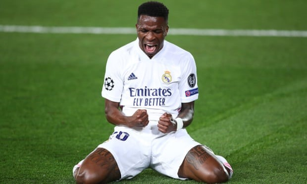

Giá trị trên thị trường và phí chuyển nhượng của các cầu thủ phụ thuộc vào rất nhiều yếu tố. Tiềm năng của cầu thủ và số năm còn lại trong hợp đồng cũng ảnh hưởng rất lớn. Gần đây, mức giá của nhiều cầu thủ có sự biến đổi đáng kinh ngạc. Ví dụ như giá trị của Neymar, người đang chật vật để duy trì phong độ sau những chấn thương, đã giảm khá nhiều. Mặt khác, giá trị của Vinicius Jr tăng theo cấp số nhân sau màn trình diễn tuyệt vời trong màu áo Real Madrid ở mùa giải này. Dưới đây là 10 cầu thủ có giá trị cao nhất bóng đá thế giới của năm 2021, thống kê từ Transfermarkt.
10.Philip Walter Foden (sinh ngày 28 tháng 5 năm 2000 tại Stockport,Anh)
Foden thi đấu ấn tượng cho cả Man City và ĐT Anh trong năm 2021. Một trong những cầu thủ xuất sắc nhất Premier League vào thời điểm hiện tại, Foden lần đầu tiên lọt vào danh sách 10 cầu thủ giá trị nhất thế giới, soán vị trí của tiền vệ Frenkie de Jong (Barcelona). Foden đa năng, có thể chơi ở nhiều vị trí ở hàng tiền vệ và tiền đạo, có tư duy chuyền bóng và kỹ thuật rê bóng tốt. Cầu thủ trẻ người Anh là nhân tố không thể thiếu giúp Man City thống trị Premier League mùa này khi đã đóng góp 5 bàn thắng và 3 đường kiến tạo.
9.Neymar da Silva Santos Júnior (sinh ngày 5 tháng 2 năm 1992 tại Mogi das Cruzes, Brasil)
Vào tháng 3/2021, Neymar là cầu thủ đắt giá thứ nhì thế giới với 128 triệu euro. Tuy nhiên, chấn thương và phong độ sa sút đã khiến giá trị của anh giảm hơn 30 triệu euro trong vài tháng qua. Neymar đã tỏa sáng khi đá cho đội tuyển Brazil tại Copa America, nhưng ở PSG, các vấn đề về thể lực khiến anh chưa có nhiều cơ hội ra sân trong mùa giải này. Song, khi ở trạng thái tốt nhất, Neymar là một tài năng không thể phủ nhận. Chấn thương có lẽ cũng là lý do khiến Neymar chưa thể đạt đến đẳng cấp của Lionel Messi hay Ronaldo.
8.Kevin De Bruyne (sinh ngày 28 tháng 6, 1991 (30 tuổi), Drongen, Gent, Bỉ)
Giá trị của Kevin De Bruyne cũng giảm nhẹ vào cuối năm 2021 do chấn thương dai dẳng. Nhưng khi sung sức, De Bruyne đều mang đến những màn trình diễn tuyệt vời cho cả CLB và ĐTQG. Kỹ năng của tiền vệ người Bỉ có thể được coi là hoàn hảo với khả năng chuyền bóng, tắc bóng chính xác và tư duy cực nhạy bén. De Bruyne vẫn là nhân tố chủ chốt, nếu không muốn là ngôi sao xuất sắc nhất Man City dưới thời HLV Pep Guardiola vào lúc này.
7.Bruno Miguel Borges Fernandes (sinh ngày 8 tháng 9, 1994 (27 tuổi), Maia, Bồ Đào Nha)
Vài tuần gần đây, Bruno đang có chút lạc nhịp với lối chơi của MU dưới thời Ralf Rangnick, nhưng sự thật là tiền vệ người Bồ Đào Nha là một trong những cầu thủ có phong độ ổn định nhất Premier League năm 2021. Anh đóng góp 19 pha lập công, 18 đường chuyền dọn cỗ cho đồng đội, là cầu thủ ghi bàn và kiến tạo số 1 của MU trong năm qua. Bruno cũng đóng vai trò quan trọng trong kế hoạch của HLV tiền nhiệm Solskjaer. Mùa này, anh đã ghi được 5 bàn thắng và 3 kiến tạo ở Premier League.
6.Romelu Menama Lukaku Bolingoli (sinh ngày 13 tháng 5, 1993 (28 tuổi), Antwerpen, Bỉ)

Lukaku là một trong những tiền đạo xuất sắc nhất năm 2021. Nhưng giai đoạn cuối năm, chấn thương và vấn đề duy trì phong độ khiến tiền đạo người Bỉ thi đấu gây thất vọng. Cầu thủ 28 tuổi còn vướng phải lùm xùm không đáng có sau những phát ngôn gây tranh cãi. Anh chỉ trích chiến thuật của HLV Thomas Tuchel và thừa nhận muốn trở lại Inter Milan. Rõ ràng Lukaku sẽ phải thể hiện nhiều hơn nữa để chứng minh anh xứng đáng với bản hợp đồng trị giá 115 triệu euro mà Chelsea bỏ ra vào mùa hè 2021.
5.Harry Edward Kane MBE (sinh ngày 28 tháng 7, 1993 (28 tuổi), Walthamstow, Vương Quốc Anh)

Sau khởi đầu mùa giải 2021/22 chậm chạp, Harry Kane đang dần trở lại dưới bàn tay nhào nặn của HLV Antonio Conte. Đội trưởng đội tuyển Anh và Tottenham thi đấu nhạt nhòa trong vài tháng đầu mùa giải này, sau hàng loạt tin đồn chuyển đến Man City. Dẫu vậy, không ai có thể phủ nhận khả năng săn bàn của Kane. Hiệu suất ghi bàn ấn tượng đã giúp Kane nhận giải thưởng Chiếc giày vàng và Cầu thủ xuất sắc nhất Premier League mùa trước.
4.Mohamed Salah Ghaly (sinh ngày 15 tháng 6, 1992 (29 tuổi), Nagrig, Ai Cập)
Mohamed Salah đã đưa sự nghiệp của anh lên một tầm cao mới tại Liverpool ở mùa giải 2021/22. Tiền đạo người Ai Cập đang có phong độ ghi bàn tuyệt vời khi đã có 15 bàn thắng sau 19 lần ra sân ở Premier League. Tình hình hợp đồng của Salah đang rất được chú ý trong vài tháng qua. Salah rất vui và sẵn sàng ở lại CLB, nhưng anh muốn một lời đề nghị hợp lý, cho thấy sự công nhận từ Liverpool trước những đóng góp của mình. Vấn đề gia hạn hợp đồng của Salah sẽ là một trong những ưu tiên hàng đầu của Jurgen Klopp và Liverpool trong năm 2022.
3.Vinícius José Paixão de Oliveira Júnior (sinh ngày 12 tháng 7, 2000 (21 tuổi), São Gonçalo, Rio de Janeiro, Brasil)

Vinicius đang trải qua những ngày tuyệt vời ở Real madrid. Nhiều người dự đoán rằng, nếu giữ được phong độ này, cầu thủ trẻ người Brazil rất có thể sẽ trở thành chủ nhân của Quả bóng vàng trong tương lai. Với điểm mạnh về tóc độ, tư duy nhanh, Vinicius đã trưởng thành rất nhiều trong vài tháng qua. Ở tuổi 21, Vinicius giữ chắc một suất đá chính, đẩy người đàn anh Eden Hazard lên ghế dự bị. Sau 19 lần ra sân ở La Liga, anh đã có 10 bàn và 4 kiến tạo.
2.Erling Braut Haaland (sinh ngày 21 tháng 7, 2000 (21 tuổi), Leeds, Vương Quốc Anh)

Haaland đang là cầu thủ thuộc thế hệ 2000 được săn đón nhất hiện tại. Cỗ máy ghi bàn người Na Uy đã có 76 bàn thắng chỉ sau 75 lần ra sân cho Dortmund. Mùa giải 2021/22, Haaland ghi 13 lần chỉ sau 11 trận. Rất nhiều CLB lớn đang để mắt đến cầu thủ 21 tuổi vào lúc này, trong đó có Man City, MU, Barca,... Với tốc độ nhanh và kỹ năng dứt điểm của một sát thủ, Haaland được kỳ vọng sẽ phá vỡ nhiều kỷ lục trong tương lai.
1.Kylian Mbappé Lottin (sinh ngày 20 tháng 12, 1998 (23 tuổi), Quận 19, Pa ri, Pháp)

Cầu thủ giá trị nhất bóng đá thế giới ở thời điểm hiện tại chính là siêu sao Kylian Mbappe của PSG . Tiền đạo 23 tuổi luôn là một cái tên nổi bật trong 4 năm qua và việc giành được danh hiệu việc chuyển tới Real Madrid được coi là chắc chắn sẽ xảy ra. Khi kỷ nguyên đối đầu giữa Cristiano Ronaldo và Lionel Messi đang dần đến hồi kết, người hâm mộ bóng đá hy vọng rằng Kylian Mbappe và Erling Haaland sẽ tiếp bước hai huyền thoại này để mở ra một cuộc đua mới hấp dẫn không kém.